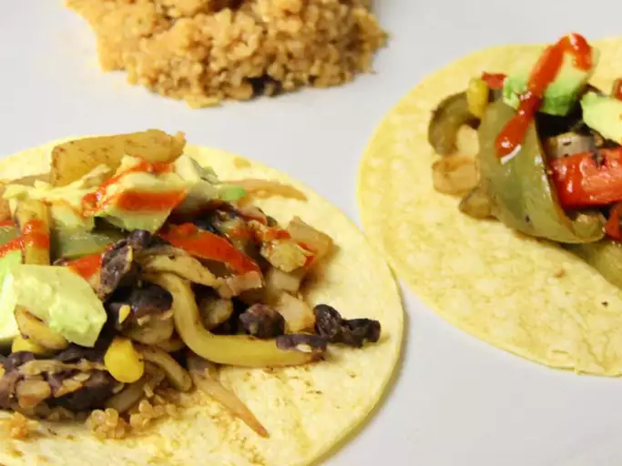

Vegan Fajitas

Description
These vegan fajitas are a wonderful meatless version of traditional fajitas. This recipe can be prepared in advance or enjoyed right away.
Ingredients
Marinade
- 1/4C olive oil
- 1/4C red wine vinegar
- 1t dried oregano
- 1t chili powder
- 1t white sugar
- garlic salt to taste
- salt to taste
Fajitas
- 2 small zucchini, julienned
- 2 medium small yellow squash, julienned
- 1 large onion, sliced
1 green bell pepper, cut into thin strips
- 1 red bell pepper, cut into thin strips
- 2T olive oil
- 1 (8.75oz) can whole kernel corn, drained
- 1 (15oz) can black beans, drained